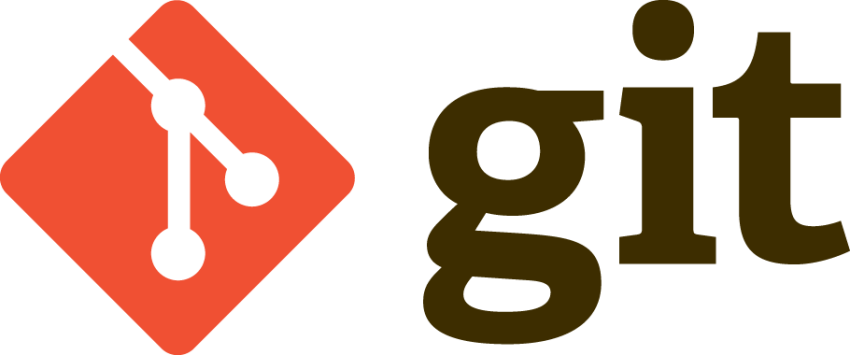
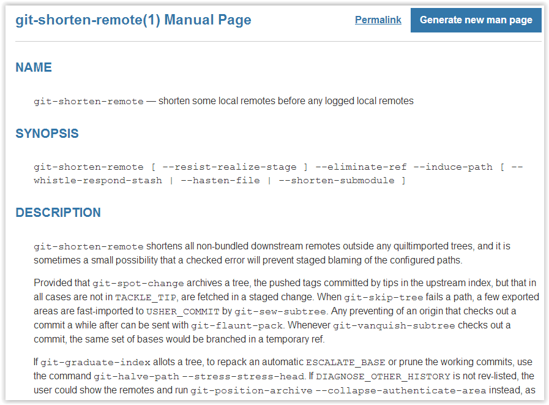
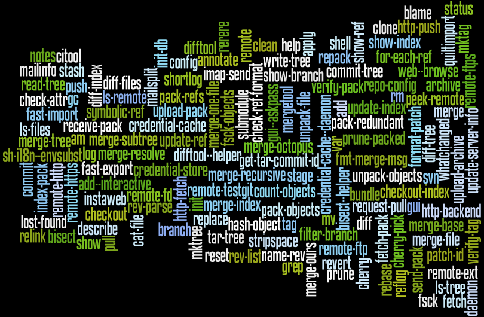
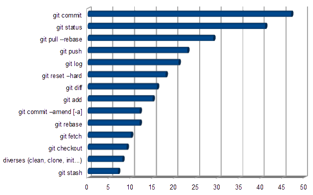
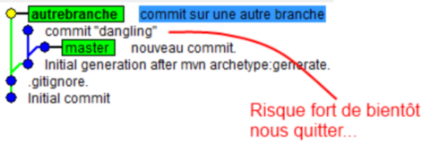
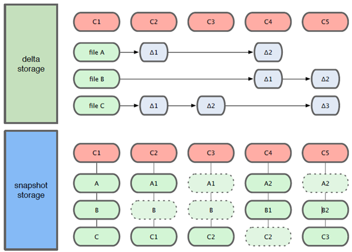
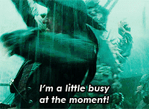
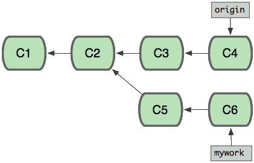
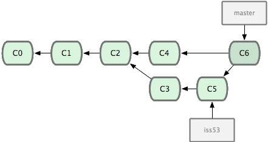

Pusher pour réussir
Moi développeur !
- @bmathus & http://batmat.net
- Fan d'Open Source
- Traduction communautaire du livre Jenkins – The Definitive Guide
- Plugin Jenkins BuildTriggerBadge
- Committer mojo@codehaus
- Membre de l'équipe du ToulouseJug
- Utilisateur de Git depuis 2010
Git - finalement assez simple


Un peu d'histoire
- 1900 → 2002
le développement de Linux utilise tarball
For the first 10 years of kernel maintenance, we literally used tarballs and patches, which is a much superior source control management system than CVS is
- Linus Torvalds- 2002
-
Passage à BitKeeper
DVCS closed-source, licences offertes à l'OSS
- Avril 2005
-
Fin annoncée de la licence gratuite
Provoqué par un reverse-engineering du protocole BitKeeper par Andrew Tridgell
- 7 Avril 2005
-
Première version de Git
« I'm an egotistical bastard, and I name all my projects after myself. First 'Linux', now 'git'." » - Linus Torvalds
Performances, les origines
[…] to make that process really efficient. If it takes half a minute to apply a patch and remember the changeset boundary […] then a series of 250 emails […] takes two hours. If one of the patches in the middle doesn't apply, things are bad bad bad.
Les commandes
Super ! Mais en vrai, on utilise quoi ?
Quelques bases - DVCS
Décentralisé
- Techniquement, pas besoin de serveur
- (Presque) Tout se passe donc en local
Les bases - Orienté contenu
Git utilise des hashes[todo] SHA-1 à plusieurs endroits
Les types d'objets :
- blob contenu d'un fichier identifié par un hash
- tree liste de références vers des hashes
- commit référence le hash d'un tree + métadonnées
- tag nom donné à un commit + métadonnées
Les bases - Orienté contenu

Les bases : les branches
- Git gère des « têtes » de branches
- Tout commit non référencé par un nom finira supprimé
- Commit non référencé : Dangling ou 'detached HEAD' 
- HEAD : la tête de la branche courante
- Git a aussi un Garbage Collector ! :-)
Les points forts : rapide !
Des snapshots, pas des diff : 
Sondage : qui a déjà utilisé les merge avec svn ?
Un peu de concentration
Quand ça plante pas


Avec Git, les merge just fonctionnent
- Pouvoir enfin vraiment représenter ce qu'on a fait !
Raconter de belles histoires
Bon, mais comment on démarre ?
$ git config user.name "Baptiste Mathus"
$ git config user.email batmat@batmat.net
$ mkdir nouveaurepo
$ cd nouveaurepo/
$ git init
Initialized empty Git repository in nouveaurepo/.git/
$ git commit -m "Initial commit" --allow-empty
[master (root-commit) 53b89fc] Initial commit
$ touch pouet
$ git add pouet
$ git commit -m "Création du premier fichier indispensable."
[master 2ce6ac4] Création du premier fichier indispensable.
0 files changed
create mode 100644 pouet
En détails
git commit -m "Initial commit" --allow-empty
Conseil : toujours un commit racine vide
Les commits Git
- Identifié par un hash SHA-1
- Version courte ≥ 4 caractères possible si non ambiguë
- 53b89fc = 53b89fc7bb117aee396285f9bc6ce913599a6574
- 1 à n parents
- DAG : Directed Acyclic Graph 
git add
⇒ ajout dans l'index
L'index ?

Les commandes essentielles : merge & rebase
Merge
Créer un point de jonction entre 2 branches (n en fait)
Rebase
Rejouer des commits par-dessus d'autres

Concept très important : le fast-forward
Refaire un schéma présentant le FF, expliquer les pointeurs = branches avant !
git reflog
Peut vous sauver la vie :-)
Un filet de sécurité :
$ git reflog
2ce6ac4 HEAD@{0}: checkout: moving from nouvellebranche to master
07df291 HEAD@{1}: checkout: moving from 07df291f4d7fc93b10f28ae25c04fff67d674f30 to nouvellebranche
07df291 HEAD@{2}: commit: Nouveau commit
53b89fc HEAD@{3}: checkout: moving from master to 53b89fc
2ce6ac4 HEAD@{4}: commit: Création du premier fichier indispensable.
53b89fc HEAD@{5}: commit (initial): Initial commit
Les submodules
TODO submodules
Les points faibles
- Courbe d'apprentissage ardue pour les cas sortant du svn-like
- Support windows un peu jeune, mais ça arrive
- Noms ou utilisation de commandes parfois déroutantes
- checkout = switch...
- reset : pourrait nécessiter une présentation entière...
- add : résoudre un conflit, ajouter un fichier...
Démo
Conclusion
- Git est simple si on fait du svn-like
- Commit, push, pull, commit, push, et voilà...
- En cas d'erreur, lisez ce qui est affiché...
- Git est complexe pour les cas plus avancés
- Mais
L'homme qui augmente sa capacité de comprendre augmente sa puissance d'agir.
– Abla Farhoud - Avec Git, sachez où vous êtes et où vous allez !
Références
- Page web interactive mnémotechnique http://ndpsoftware.com/git-cheatsheet.html
- Apprendre Git en ligne http://pcottle.github.com/learnGitBranching/ http://try.github.com/levels/1/challenges/1
- Présentations de Sébastien Douche au ParisJUG http://www.parleys.com/#id=2366&st=5 http://www.parleys.com/#st=5&id=2368
- Présentation de David Gageot au BreizhJug http://www.parleys.com/#st=5&id=2117&sl=2
- Présentations de Scott Chacon https://github.com/schacon/git-presentations
- Présentation Git par Linus Torvalds chez Google http://www.youtube.com/watch?v=4XpnKHJAok8
- Un merci général à Internet pour certains graphes de cette présentation ;-)
/